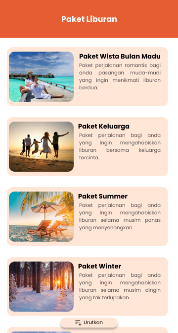

Study Case
pada tanggal 22 mei 2021 tim kami yang berjumlah 4 orang mendapatkan tugas kelompok untuk merancang aplikasi dengan study case sebagai berikut:
‘Persona bernama Meghan, umur awal 30-an, seorang manajer perusahaan administratif dan sekretari perlu memilih tour terbaru dan terupdate untuk melakukan wisata ke luar negeri bersama keluarga kecilnya. Dia bukan tipe planner, tapi tidak ingin sampai tidak bisa memanfaatkan waktu sebaik mungkin untuk berkeliling ke tempat yang penting saat traveling ke luar negeri karena kurang planning, tapi juga ingin bisa memilih seperti apa dia ingin tema liburan terbaik bagi keluarganya.Dia ingin sesuatu seperti sistem atau aplikasi yang menawarkan info tour plan per kota di luar negeri, dengan beberapa pilihan tour plan. Harapannya bisa menemukan tour plan tematik, seperti tour plan khusus keluarga muda seperti keluarganya, dengan tour yang kid-friendly tapi tidak mengorbankan tour yang cocok untuk para orang tuanya juga.”
Tim kami saling saling bertukar ide untuk memecahkan apa yang sebenarnya user butuhkan dengan study case tersebut. Kami memberikan tim untuk saling membuka pikiran sebelum kita menentukan ide mana yang akan kita ambil untuk tim kita pecahkan dalam waktu 2 hari, seperti dibawah ini:
- user membutuhkan paket (Tema) liburan luar negeri
- user membutuhkan list liburan kota luar negeri terpopuler dan terupdate
- user membutuhkan planner untuk liburannya
akhirnya tim kami memulai untuk mengisi User Journey Map.

Setelah selesai mengisi User Journey Map Kami memulai mencari reverensi apps yang mungkin mirip dengan masalah yg ingin tim kami pecahkan namun tenyata kami tidak menemukan apps yang mirip dengan study case yang cocok untuk kami pecahkan, karena banyak apps yang menawarkan list liburan namun tidak memberikan kemudahan untuk user berlibur dengan sekali pembayaran, dan terjadwal. Maka dari itu Tim kami memulai mendevelop ide ide kami kedalam apps design.
My Role
- memilih ide dari yang out of the book akhirnya dipilih dari ide team kam
- merancang UI design bersama 1 team kam
- membuat prototype
- content writer
- mengetest prototype
kami mencoba mengpalikasikan ide kami kedalam design karna permasalahannya user ingin paket liburan dan maka Tim kami berinisiatif membrikan fitur “paket liburan” sehingga user dapat kemudahan untuk berlibur tanpa harus pesan hotel, transportasi, tempat destinasi yg dikunjungi. ini sangatlah mempersingkat user dalam aktivitas liburannya

Didalam Paket liburan kami juga masih menyediakan keleluasaan bagi user untuk memilih seperti apa jenis liburan yang akan user gunakan, seperti liburan keluarga, atau bulan madu? bahkan liburan yang cocok ketika musim panas atau bahkan musim dingin.

Tidak cukup sampai situ setelah memilih tema apa yang ingin user kunjungi baru kami merekomendasikan negara/ kota yang cocok untuk user.

Jika User ingin mengetahui fasilitas yang mereka dapatkan dalam paket liburan mereka bisa melihat di detail pesanan disana kami sudah memaparkan informasi dengan jelas. sehingga tidak ada keraguan untuk user menikmati liburanya. Baru setelah itu user diarahkan ke pembayaran.

My Team
- Tri lumaksono ( saya sendiri)
- Irene
- Azdar maskun
- ali rozikin
saya rasa masih banyak kekurangan dalam project kami, karna disisi lain waktu kami yang hanya 2 hari dan jam untuk mengerjakan tim kami berbeda beda karena urusan masing - masing sehingga kita melakukan penyederhanaan Efenety Mapping dan masih terliat icon button yang menurut kami masih sangat kurang seperti button back dari setiap halaman dan masih banyak lagi.